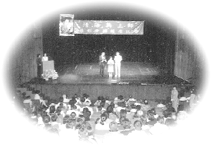
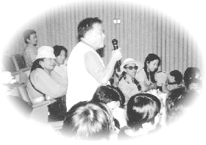

| Panorama d'événements |
|  | |
A Hong Kong, des conférences vidéo présentant les enseignements de Maître Ching Hai ont attiré un très large public.
|
[Hong Kong] À Hong Kong, en septembre et octobre dernier, lors de deux séminaires de grande envergure, la présentation de conférences vidéo présélectionnées de Maître de Sa tournée en Europe a suscité des réactions enthousiastes du public. Inspiré par la sagesse et la conviction profonde émanant de ces conférences, l'auditoire a posé de nombreuses questions significatives auxquelles le messager Guan Yin a répondu de manière profonde et satisfaisante. Ces séminaires ont été réalisés grâce à la sincérité et à la dévotion des amis pratiquants du centre de l'Association du Maître Suprême Ching Hai de Hong Kong. Ils ont distribués environ 600 000 brochures d'information et ont annoncé les horaires des séminaires à travers divers médias. Un service d'interprétation simultanée a été assuré dans les trois langues principales de là-bas. Les deux séminaires suivis d'une dégustation de plats végétariens se sont clôturés avec succès.
|  | L'auditoire a posé de nombreuses questions très perspicaces sur la spiritualité. |